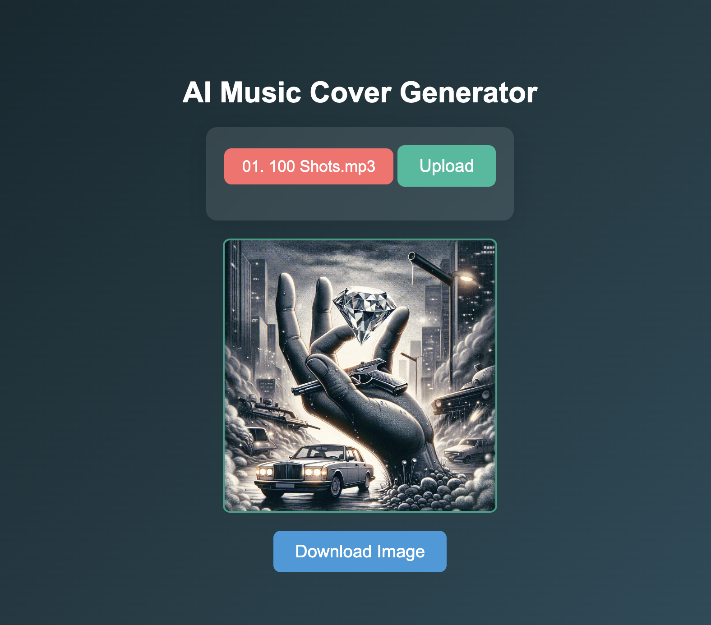

AI Music Cover Generator
From Audio to Visual: Creating AI-Generated Music Covers
Authors: David Mavrodiev, Ziya Ruso, Sanan Qarayev and Amlan Sahoo
Pipeline Overview

Step 1: Upload Audio File
The process begins with the user uploading an MP3 audio file. This file contains the song's lyrics that will later be used to generate the cover image.
Step 2: Extracting Lyrics
Whisper AI transcribes the audio into text. The transcription includes all the lyrics, which are then passed on for further processing.
Step 3: Censor & Extract Key Elements
Using GPT-4, we censor inappropriate language and extract the most important parts of the lyrics. This helps us focus on key themes for generating a relevant image.
Step 4: Sentiment Analysis
We perform Sentiment Analysis on the extracted lyrics to understand the mood and tone of the song. This analysis helps guide the visual style of the cover image.
Step 5: AI Image Generation
Using DALL·E-3, we generate a music cover image based on the sentiment and key parts of the lyrics. The result is an AI-created visual representation of the music.
AI-generated cover for "100 Shots" by Young Dolph
Technical Overview
- Whisper AI for lyrics transcription.
- GPT-4 for censoring and extracting key lyrics.
- Sentiment Analysis to understand the mood of the song.
- DALL·E-3 for generating the final music cover image.
Live Demo
Conclusion
This pipeline allows for the seamless transformation of audio into AI-generated visual art, tailored to the content and sentiment of the music.